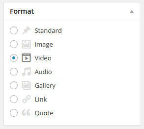
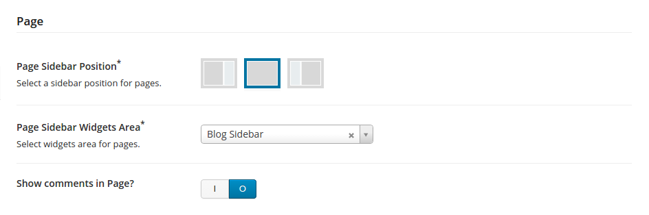

Xenia - Refined WordPress Corporate Theme
First of all a huge thank you for purchasing our WordPress Theme at Themeforest. If you have any questions, that are beyond the scope of this help file, please ask us a question on Themeforest. You can also follow us on Themeforest to keep track of all our updates and future items.
Thanks so much!
- Created: 5/10/2014
- By: PhoenixTeam
- E-mail: phoenix.team.themes@gmail.com
How to Setup Xenia Theme
The installation and configuration of the theme consists of the following steps:
General Theme Requirements
- PHP v.5.3 or higher.
- WordPress v.3.6 or higher.
Required Plugins
- WPBakery Visual Composer v.4.3 or higher (supplied with theme).
- Revolution Slider v.4.5 or higher (supplied with theme).
Recommended Plugins
- Envato WordPress Toolkit v.1.7 or higher (supplied with theme).
Theme Installation
In order to proceed with the theme installation, you must be running WordPress 3.6 or higher and you should have PHP 5.3 or higher on your server.
Theme Installation via WordPress Administration Area
- Go to Appearance → Themes.
- Click "Install Themes" and hit the "Upload" button
- Navigate to find the "xenia.zip" file on your computer and click "Install Now"
- Wait while the theme is uploaded and installed.
- Activate the newly installed theme. Go to Appearance → Themes and activate it.
We strongly recommend you to install all required plugins after theme activation.
For more information about how to install plugins, related with Xenia theme, go to "Plugins Related Content" section.
Theme Installation via the FTP
- Log into your hosting space via the FTP software (For Ex: via the FileZilla).
- Unzip the Xenia.zip file and ONLY use the extracted Xenia theme folder.
- Upload the extracted Xenia theme folder into wp-content → themes folder.
- Activate the newly installed theme. Go to Appearance → Themes and activate it.
Installation of a Theme Related Plugins
Please follow the next steps to make the installation and activation of a plugins:
- Click on "Begin installing plugins" link (screenshot below)
- Do all steps, described on screenshot below
- Then all selected plugins will be installed & activated.
- Finally you get result like this:
Setup of the Xenia Theme
Setup of the Xenia Theme is a complex process and you are need to do many different things to get it done.
This chapter of documentation is designed to help you with this process, so let's go thru it step by step.
Adding Pages
Xenia Theme was designed to use with Visual Composer plugin (supplied with theme). All pages examples in this documentation will be assambled with Visual Composer (See Plugins chapter of this documentation for more detailes about required and recommended plugins).
You are not forced to use this plugin, but we are strongly recommend you to use it.
Homepage
To create Homepage and to set it as WordPress Front page, you should perform the following steps:
Go to Pages → Add New.- Name it for example "Test Homepage".
- In "Page Attributes" section set "Page with Visual Composer" template.
- Click on "Backend Editor" button.
- Choose one of hompage layouts, for example "Corporate Hompage Layout".
- Click on "Publish" button after setting a real content.
Please note that we are got a layout template with dummy content. You should edit all sections of this layout and set a real content into it.
After doing so your page should look like that:
- Go to Settings → Reading.
- Choose "A static page" in "Front page displays" section.
- Select your page as a "Front page"
- Click on "Save Changes" button below.
Setting Sidebars
By default Xenia Theme supports 4 sidebars (widgets areas). They are:
Blog Sidebar is used for blog pages by default and it should contain widgets, that are most useful for blog, like so:
And this is how it looks at the front-end of our website:
But if want to use different sidebar for blog page or you need more than one blog sidebar, - it's not a problem at all. You can create unlimited sidebars using Xenia Theme Sidebars Generator. To create a new sidebar you should perform a following steps:
- Go to Xenia Options → Sidebars
- Enter the name of sidebar you want to create (for ex: "Dummy Sidebar")
- Click on "Save Changes" button
Now yor Dummy Sidebar is created, and if you go to Appearance → Widgets, you will see it.
If you want to generate another sidebar, simply click "Add Sidebar" button on Xenia Options → Sidebars, add new sidebar name and save changes.
And now it's time to go to Appearance → Widgets. As you can see, we've got two new sidebars, called "Dummy Sidebar" and "Another Sidebar". That's it! Now its time to put some demo content to our sidebas ang test them.
You can use your newly created sidebars in a different ways:
You can go to Xenia Options → Blog and select one of our sidebars as a "Blog Sidebar Widgets Area",
and see the results (I put some content into our Dummy Sidebar, and now we can recognize it):
You can use any sidebar you want in any page, just select one at "Page Layout" section while you editing page, for example our Blog page. And we will select our "Another Sidebar":
And we've got this result:
You can use any sidebar you want in any page, using Visual Composer "Widgetised Sidebar" shortcode.
See how to use it in Visual Composer documentation (it also supplied with the theme and you can find it in "Documentation" folder in your Xenia_package_v.1.0.0.zip file.)
Footer Sidebars are used for construct beautiful and informative website footer. By default there is 3 Footer Sidebars, but you can set fourth Footer Sidebar in Xenia Options → Footer → Footer Layout.
Posts with Post Formats
Post Formats is a theme feature introduced with WordPress v.3.1. A Post Format is a piece of meta information that can be used by a theme to customize its presentation of a post.
Xenia Theme supports 7 post formats. They are:

We have provide a handy user interface (UI) for them. Our Post Formats UI is self explanatory, it has previews and many examples of content, which can be easely used just by clicking it (will be useful especially for Audio and Video Post Formats).
If you want to know more about WordPress Post Formats, you should visit this WP Codex page
Portfolio
Xenia Theme supports Portfolio Items which are a beautiful way to demonstrate your work to the public.
You can create as many Portfolio Items as you want and use them in a different ways.
- You can create a Portfolio Page using theme predefined page template
- You can create a custom Portfolio Grid using Visual Composer (like that)
- You can also show your customers full summary of your Portfolio project.
Users of your site can see each item from the Portfolio Grid in fullwith by clicking the "Search" button and they also can reed short project summary by clicking the the "Attach" button (all these buttons appears on hover).

From short project summary users can also gets to a full Portfolio Item Page (it looks like this).
To create a Portfolio Item you should perform the following steps:
- Go to Portfolio → Add New.
- Fill the "Add New Portfolio Item" form.
- Click to "Set featured image" link in "Featured Image" section
- Seclect featured image from WP Media Gallery Popup. This image will represent a whole project and it will be shown in portfolio grid and in a portfolio single page slider (as a first image). So you don't need to place this image into "Portfolio Gallery" section
- Click to "Set featured image" button at the bottom of WP Media Gallery Popup.
- Click to "Select or Upload Images" button in "Portfolio Gallery" section.
- Choose some images (To select multiply images from media library use Ctrl/Cmd + click.) and hit "Select" button.
After setting featured image lets select images for portfolio item single page slider:

Once you have finished filling the form, do not forget to publish your Portfolio Item by clicking "Publish" button in "Publish" section.
You can see an example of fully filled and published Portfolio Item on screenshot below.
Team, Services & Testimonials

Team, Services & Testimonials are designed to be used with Visual Composer Shortcodes.
Team
Team is the place where you can show the world how awesome you team is and who are them - your team members.
You can add as many Team Members, as you want and use them later in Visual Composer Shortcode.
As you can see from the screenshot above, the process of creation of new Team Members is pretty obvious, but we're want you to pay attention to "Social Network" section.
By default it looks something like this:
You can provide any Social Network you want from the long list of networks and do something similar to this:
Please note that the number and order of these fields must match.
Services
Services are simply the beautiful and scalable icons with some text description. They can be used in Visual Composer with two layouts:
- Boxes
- Lists

As you can see from the screenshot below, creation/edition of Service Item is super simple.
Just write some text and select the Service Icon.
And don't forget to save/update :)
Testimonials
Testimonails is the best thing to show a real feedback from your customers to the world.
Testimonials can be used in Visual Composer with two layouts:
- Boxed
- Fullwidth
As you can see from the screenshot below, the process of creation/edition of Testimonial is also pretty clean, you just need to deal with six fields, including rating.
Plugins Related Content
First of all, you should have all required plugins installed & activated on your website. For more information please see a Plugins Installation chapter of this documentation &
Now you have all required plugins, and its time to create content, related to them.
Visual Composer
WPBakery Visual Composer is #1 best selling page builder plugin for WordPress. It allows you to build complex, content rich pages in just minutes. No programming knowledge required. With it you can forget about default WordPress [shortcodes].
Visual Composer allows you to build unique page layouts and fill them via the visual popup forms.
We provide you a short example of how to use Visual Composer and we'll be focused more on our exclusive theme features. For more comprehansive description of Visual Composer functionality, please see its documentation (supply with the theme).
Xenia theme support an eleven exclusive Visual Composer shortcodes. We provide to you an examle of how to use it, and it is the "Promo Title" shortcode.
If you want to see it in action, you should perform the following steps:
- Go to Page → Add New → Backend Editor → Add Element
- Click on "Xenia Exclusive" link
- Coose a "Promo Title" shortcode
- Fill all form elements of "Promo Title" pop-up & click "Save Changes" button
After it you should have something like this on your back-end:
Now you sould save changes and check the front-end of your page. And it should look like this:
This is a common way of use of Visual Composer. For more comprehansive description of Visual Composer functionality, please see its documentation (supply with the theme).
Revolution Slider
Slider Revolution is an all-purpose slide displaying solution that allows for showing almost any kind of content with highly customizable, transitions, effects and custom animations. Due to its visual oriented interface and countless options, Slider Revolution is suited for beginners and pro’s alike.
In this short hint we will show you how to create slider using "Slider Revolution" plugin. For more comprehansive description of Slider Revolution functionality, please see its documentation (supply with the theme).
Plaese note that you sould have "Slider Revolution" plugin installed & activated on your website.
So let's start to build our slider:
- Go to Revolution Slider → Create New Slider
- Fill all form fields like on screenshot below:
- Save your slider
- revslider-set-slide-opts.png
- Click "Edit Slides" button, then click on "New Slide" and select slide image
- Click "Edit Slide" button to set slide options:
- Fill all form elements liker this:
- Click on "Add Layer" button (you can add as many layers as you want)
- Set Layers Timings & sort them
- Repeat steps, described above untill you have three slides, just like on our demo
Click "Update Slide"
At the Back-end of your website it should looks like this:

And at the Front-end it will be look like this:
Xenia Theme Options
Xenia Theme Options Panel helps you easily take control over your site, by allowing you to upload your logo and favicon, style the appearance of the theme with your custom colors, change fonts, turn features on and off, paste custom CSS and JS code, paste Google Analytcs code and much more without having to write any code.
By default Xenia Theme Options is set exactly as on a Live Demo
To access the Theme Options panel, navigate to Xenia Options.
Xenia Theme Options are divided into ten sections. They are:
Let's speak about each section in more details.
Header
Header section provides you the ability to change logo (including logo for the retina displays), choose what type of main menu to use (sticky or not) and the ability to display your contact information.
Top Contacts Back-end:
And its Front-end:
Blog
In the "Blog" section we've place all options, that are associated with configuration of blog pages and posts. In this section you can change blog layout, sidebar position, choose what sidebar will be used for blog pages by default. Also you can turn social share button block for blog posts & choose what social share buttons will be used.
Page
In the "Page" section we have only few options, because in our theme creation of pages relies on a Visual Composer plugin.

Portfolio
In the "Portfolio" section we have options for configuring all things, that are related with Portfolio pages.
- Portfolio Page Layout has 4 variants: 2 Columns, 3 Columns, 4 Columns and Fullwidth.
- Portfolio items quantity is setting how many portfolio items will be shown on portfolio pages, and the default value for it is 9.
- Portfolio Single Items Layout is used to change the layout of portfolio single item pages. There's two layouts: "Half" and "Wide".
- Related items quantity sets how many portfolio items will be shown on the single item page. By default it is set to 6.
Appearance
In the "Appearance" section you can set layout style, theme adn footer colors (you can play with this features in real time on our Live Demo for a better understanding). Also you can upload and set you custom favicon & other icons here.
Other
Here you can set e-mails for the Contact Form Widget, paste Google Analytics Property ID to receive statistics, define your custom CSS rules and even wright your own JavaScript for your website.
Updates
This section indicates your updates status.
If alert message say that your Envato Keys is not set:
- Go to Update Theme chapter of this documentation
- Do all steps, describded there.
After it you should have a green message like on screenchot below, and you can be sure you'll get theme updates.
Import Demo content
I recommend you to use the demo content files to build a new website which doesn`t have content yet. Our theme includes .xml data files which will allow you to upload the demo content to your website. Demo content is the same as in the Live Demo Preview.
- Find "Demo Content" folder in downloaded package from Themeforest
- Find the demo.xml file 1
- Login into WordPress
- Go to Tools > Import
- Click on "WordPress" If you don't have it already, install the plugin
- Click to select file
- Choose our demo.xml file

NOTICE: Don`t forget to check the "Download and Import File Attachments" in order to import images too.
Setting for Slider
After installing the Revolution slider, go to Revolution Slider > Import Slider > add select our demo content for slider (slider.zip in Demo folder)
How to Update the Theme
You can update your theme via the FTP or via WordPress. See the information below for each method. If you choose to update your theme via the FTP, you first need to download the new theme files from Themeforest.
How to Update Your Theme via WordPress (easy way)
Important: You should have "Envato Wordpress Toolkit" plugin installed and activated on your WordPress site. This plugin is supplied with our theme and it can be installed automatically.
Go to Xenia Options → Update and set up your Envato Marketplace Username and the API Key.
You can find an API Key at http://themeforest.net in "Settings" section.
How to Update Your Theme via the FTP
- Go to wp-content → themes location and backup your Xenia theme folder by saving it to your computer, or you can choose to simply delete it. Your content will not be lost.
- Retrieve the "xenia.zip" file from your new Themeforest download (only theme file) and extract the file to get the Xenia theme folder.
- Then simply drag and drop the new Xenia theme folder into wp-content → themes location. Choose to Replace the current one if you didn't delete it.
Social
In the "Social" section you can set RSS feed URL and define links of yuor company social profiles.